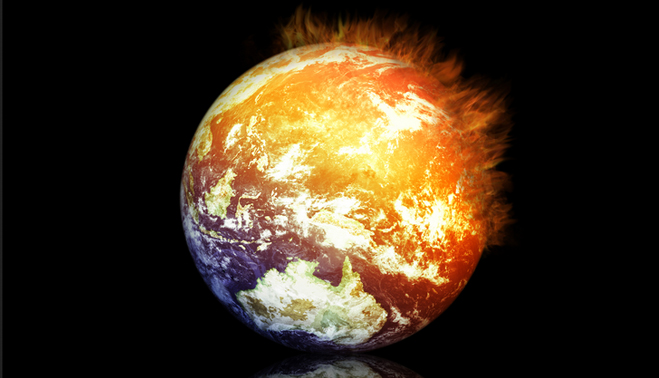
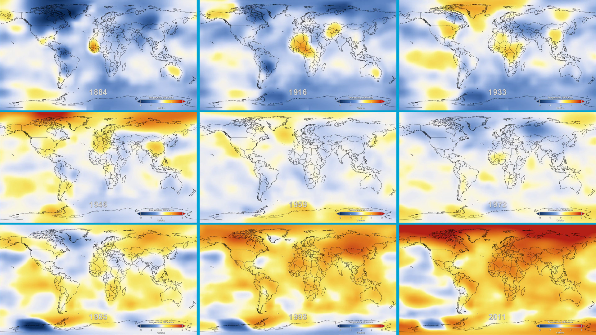

Küresel Isınmanın Nedenleri
Doğal Nedenler
Güneşin Etkisi
ESA bilim adamlarından Paal Brekke; iklim bilimcilerinin uzun süredir Güneş beneklerinin 11 yıllık döngüsel hareketini ve Güneş'in yüzyıllık süreçler içinde parlaklık değişimini incelediklerini belirtmiştir. Bunun sonucunda Güneş'in manyetik alanı ve protonlar ile elektronlar biçiminde ortaya çıkan güneş rüzgarının, Güneş sisteminde kozmik ışımalara karşı bir kalkan görevinde olduğu açıklanmaktadır. Güneş'in değişken aktivitesiyle zayıflayabilen bu kalkan, kozmik ışımaları geçirmektedir. Kozmik ışımaların fazla olması bulutlanmayı arttırmakta, Güneş'ten gelen radyasyon oranını değiştirerek küresel sıcaklık artışına neden olmaktadır.
Güneş'ten gelen ultraviyole ışınım aynı zamanda kimyasal reaksiyonların oluştuğu (ve dolayısıyla atmosferin tamamını etkileyen) ozon tabakası üzerinde değişikliğe yol açacaktır.
Dünya'nın Presizyon Hareketi
1930 yılında Sırp bilim adamı Milutin MİLANKOVİÇ Dünya'nın Güneş çevresindeki yörüngesinin her doksanbeş bin yılda biraz daha basıklaştığını göstermiştir. Bunun dışında her kırkbir bin yılda Dünya'nın ekseninde doğrusal bir kayma ve her yirmi üç bin yılda dairesel bir sapma bulunduğunu belirtmiştir. Günümüz bilim adamlarının bir çoğu Dünya'nın bu hareketlerinden dolayı zaman zaman soğuk dönemler yaşadığını ve bu soğuk dönemler içindeyse yüz bin yıllık periyotlarda on bin yıl süreyle sıcak dönemler geçirdiğini bildirmektedir. Bu da Dünya'nın doğal ısınmasının bir nedenini oluşturmaktadır.
El Nino'nun Etkisi
"Güney salınımı sıcak olayı" olararak tanımlanabilecek El Niño hareketi, 1990-1998 yıllarında tropikal doğu Pasifik Okyanusu'nda deniz yüzeyi sıcaklıklarının normalden 2-5º daha yüksek olmasına neden olmuştur. Özellikle 1997 ve 1998 yıllarındaki rekor düzeyde yüzey sıcaklıklarının oluşmasında, 1997-1998 kuvvetli El Niño olaylarının etkisinin önemli olduğu kabul edilmektedir. 1998'deki çok kuvvetli El Niño bu yılın küresel rekor ısınmasına katkıda bulunan ana etmen olarak değerlendirilebilir.
Yapay Nedenler
Fosil Yakıtlar
Kömür, petrol ve doğalgaz dünyanın bugünkü enerji ihtiyacının yaklaşık u'lik bölümünü sağlamaktadır. Yapılarında karbon ve hidrojen elementlerini bulunduran bu fosil yakıtlar, uzun süreçler içerisinde oluşmakta fakat çok çabuk tüketilmektedir. Dünyanın belirli bölgelerinde toplanmış bu yakıtların günümüz teknolojisiyle ¾'ünün yarısının çıkarılması imkansız; diğer yarısının ise çıkarılması teknik olarak çok pahalıdır. Bu da fosil yakıtları yenilenemeyen ve sınırlı yakıtlar sınıfına sokmaktadır.
Sera gazları
Sera Gazları Oluşumu
Güneş'ten gelen ışınların bir bölümü ozon tabakası ve atmosferdeki gazlar tarafından soğurulur. Bir kısmı litosferden, bir kısmı ise bulutlardan geriye yansır. Yeryüzüne ulaşan ışınlar geriye dönerken atmosferdeki su buharı ve diğer gazlar tarafından tutularak Dünya'yı ısıtmakta olduğundan yüzey ve troposfer, olması gerekenden daha sıcak olur. Bu olay, Güneş ışınlarıyla ısınan ama içindeki ısıyı dışarıya bırakmayan seraları andırır; bu nedenle de doğal sera etkisi olarak adlandırılır
Sera etkisinin Önemi
Sera etkisi doğal olarak oluşmakta ve iklim üzerinde önemli rol oynamaktadır. Endüstri devrimi ile birlikte, özellikle 2. Dünya Savaşı'ndan sonra, insan aktivitesi sera gazlarının miktarını her geçen yıl arttırarak yüksek oranlara ulaştırmıştır. Bu etkinin yokluğunda Dünya'nın ortalama sıcaklığının -18ºC olacağı belirtilmektedir. Ancak yaşamsal etkisi olan sera gazlarının miktarının normalin üzerine çıkması ve bu artışın sürmesi de Dünya'nın iklimsel dengelerinin bozulmasına neden olmaktadır.
Bu doğal etkiyi arttıran karbondioksit, metan, su buharı, azotoksit ve kloroflorokarbonlar sera gazları olarak adlandırılmaktadır. Ozon tabakasının incelmesi de başka bir etkendir.
Sera Gazlarının Bilinen ve Olası Etkileri:
Dünyanın sıcaklığı sanayi devriminden bu yana 0,45ºC artmıştır. Bunun esas nedeni fosil yakıtların yanması sonucu açığa çıkan CO2 ve diğer sera gazlarıdır. Artan nüfus ve büyüyen ekonominin enerji gereksinimleri de fazlalaşmaktadır. Bu gereksinimin karşılanması ise fosil yakıt tüketiminin artmasına ve atmosferdeki CO2 miktarının büyük ölçüde çoğalmasına neden olmaktadır. Sıcaklık artışının olası etkileri teoriler biçiminde incelenmektedir. Şehirlerin Isı Adası Etkisi
Güneşli ve sıcak günlerde, yoğun nüfuslu ve yüksek binaların sıklıkla görüldüğü kentsel bölgelerin çevrelerine göre daha sıcak olmaları, şehirlerin ısı adası etkisini oluşturur. Bu asfaltlanmış alanlar,bitki topluluklarının köreltilmiş olduğu bölgeler ve siyah yüzeyler "ısı adası etkisi"nin başlıca nedenleridir. Kentleşmiş alanlarda hava dolaşımının yapılaşmanın artışıyla engellenmesi ve doğal iklim ortamının bozulması yerel bir ısınmaya yol açar. Bu tür yerel ısınmalar da küresel ısınmayı arttırıcı etkidedir.
Şehir planlamasında ve bina yapımında güneş ile yapı arasındaki ilişkinin iyi ayarlanması ısı adası etkisini engelleyecektir.Örnek Şehirler; Detroit (USA), Los Angeles (USA) ,Hong Kong (ÇİN)...
Smog
Havaya salınan fazla miktardaki gazlar, atmosferdeki havayı yoğunlaştırır, gaz tabakasını kalınlaştırır. Bu yüzden gelen güneş ışınları daha fazla emilir, daha az yansıtılır ve yapay bir sera etkisi oluşur. Gazlar, özellikle büyük şehirlerde, Hava Yoğunluğu (Smog) oluşturarak etkili olmaktadır.
Smog oluşumunun bulunduğu yerleşim yerlerinde yaşayan insanlarda
- Akciğer ağrıları
- Hırıltı
- Öksürük
- Baş ağrısı
- Akciğer iltihapları görülür.
Sera Gazlarının Bilinen ve Olası Etkileri
Kuraklık ve seller: Sera etkisi çeşitli iklim değişikliklerine yol açacaktır. Önlem alınmadığı takdirde bazı doğa olaylarının olumsuz etkileri çok büyük boyutlara ulaşacaktır.
Güç üretiminde azalma: Elektrik güç santrallerinin tamamı suya ihtiyaç duymaktadır. Sıcak geçen yıllarda elektrik istemi artacak fakat su miktarının azalmasından dolayı elektrik üretimi düşecektir. Bu da devlet ve halklara ekonomik sıkıntılar yaşatacak, çeşitli sorunlara neden olacaktır.
Nehir ulaşımında problemler: Sıcaklık artışına bağlı olarak nehir sularının alçalması, suyolu ticaretine engel oluşturup ulaşım giderlerini arttırmaktadır.
{kind=link}
{kind=link}
{kind=link}
{kind=link}